Introduction to data visualization in R using ggplot2
WINSTATS REU
Dr. Silas Bergen
Overview
The R package ggplot2 is the standard for data visualization in R. Authored by Hadley Wickham, gg stands for “Grammar of Graphics.” In learning ggplot2, the following cheat sheet will be invaluable (I myself refer to it often).
Hadley’s Grammar of Graphics is outlined in detail in this article (which I highly recommend in its entirety). Here, he illustrates his principles using a small data set similar to the following:
df <- data.frame(A = c(2,1,4,9),
B = c(4,1,15,80),
C = c(1,2,3,4),
D = c('far','far','near','near'))
df## A B C D
## 1 2 4 1 far
## 2 1 1 2 far
## 3 4 15 3 near
## 4 9 80 4 nearVisualizing any data set using the Grammar of Graphics requires the use of aesthetic mappings that map data to geoms, using scales. Geoms are the visual entities that we see on a graph.
Examples of geoms:
- Points
- Bars
- Lines
- Polygons
Scales are the equivalent of EPTs we’ve studied earlier this semester. Examples of scales in ggplot2 are:
- x (position on the horizontal)
- y (position on the vertical)
- color
- shape
- size
There are others, but these are some important ones.
Any plot created with ggplot2 requires these ingredients. To create a plot, one must specify which variable(s) is/are to be aesthetically mapped; what geom to map them to; and what scale to use to control the mapping. The skeleton of any ggplot2 command is as follows; parts in italics are to be replaced with specific data names/geoms/scales:
ggplot(data = nameofdata) + geom_nameofgeom(aes(scale1 = variable1, scale2 = variable2))
At a minimum, most geoms require the x scale.
For example we could aesthetically map variable D using the bar geom. Viewing the help page at ?geom_bar indicates that the x scale is the minimum scale required to map data to the bar geom. Other geoms have different requirements:
library(ggplot2)
ggplot(data = df) + geom_bar(aes(x = D))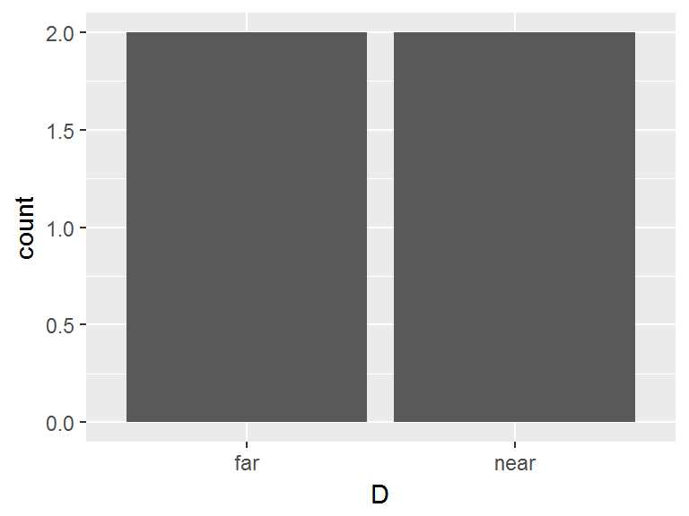
Alternatively, we could map A and B to the point geom on a Cartesian plane. Note in ?geom_point that two scales are required for aesthetic mappings to point geoms:
ggplot(data = df) + geom_point(aes(x = A,y=B))
We can employ other scales outside of aesthetic mappings. For example, if we want to change the aesthetic mapping of the above scatterplot by changing the shape, color, and size scale, we can do so with the following:
ggplot(data = df) + geom_point(aes(x = A,y=B), shape = 17,color='red',size=4)
Notice in the above code that the scales that are not controlling aesthetic data mappings are outside the aes() command.
As an aside, looking at the ?shape help file, we can find code to see all possible shapes:
df2 <- data.frame(x = 1:5 , y = 1:25, z = 1:25)
s <- ggplot(df2, aes(x = x, y = y))
s + geom_point(aes(shape = z), size = 4) + scale_shape_identity()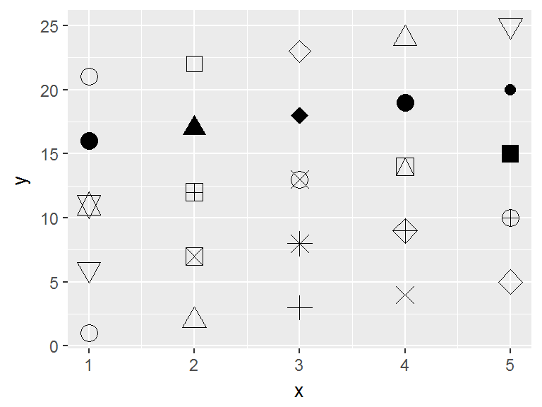
Now suppose we want to aesthetically map other variables using the shape, color, and size scales. We must now put these specifications inside the aes() command and specify the variables we wish to map. Consider the following code, and note the different looks, error messages and warnings that appear when attempting to apply aesthetic mappings using various scales depending on the data type. In ggplot-speak, “continuous” refers to quantitative data in general; while “discrete” refers to categorical data:
#Mapping continuous C with size:
ggplot(data = df) + geom_point(aes(x = A,y=B, size = C))
#Mapping continuous C with size and color:
ggplot(data = df) + geom_point(aes(x = A,y=B, size = C, color = C))
#Mapping continuous C with shape (we know we shouldn't do this!):
ggplot(data = df) + geom_point(aes(x = A,y=B, shape = C))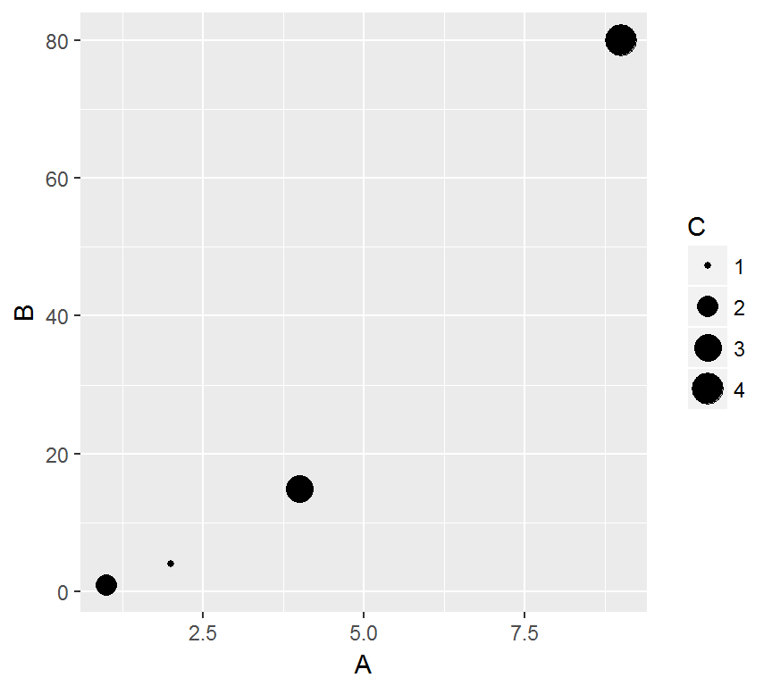
YOUR TURN: See if you can re-create these plots:

 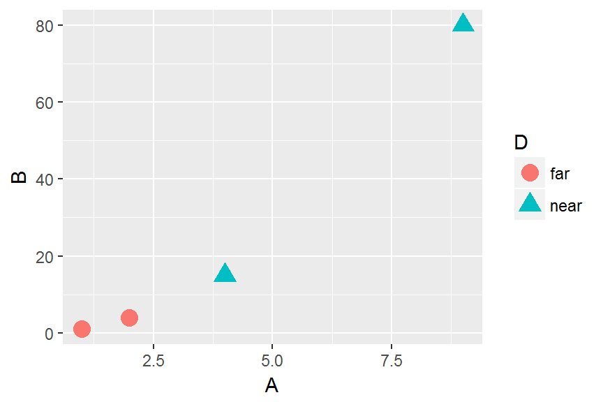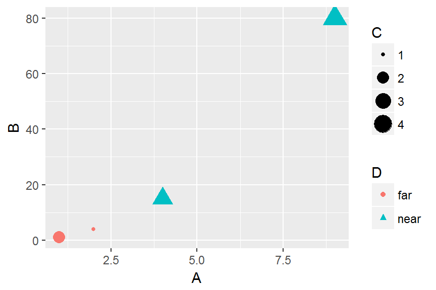
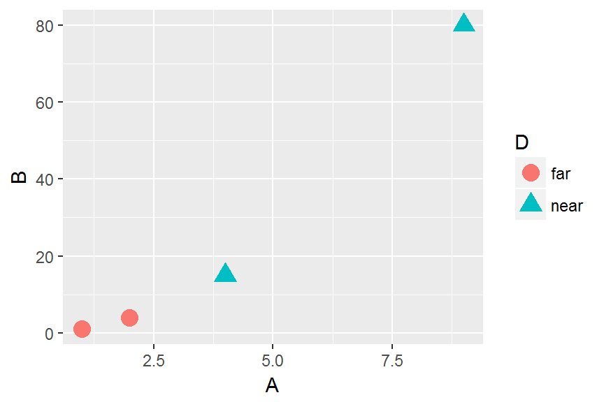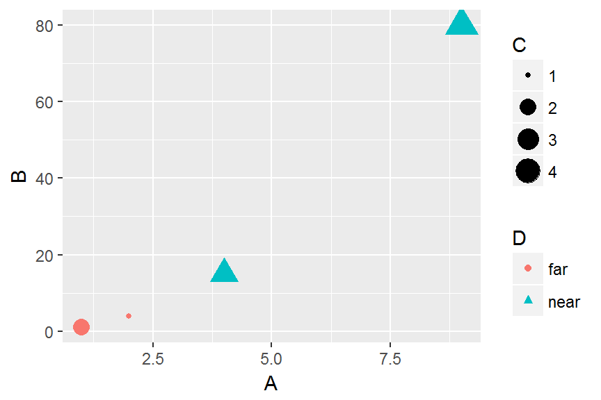
Note some interesting concepts illustrated here:
- Continuous variables should be mapped using size or color scales; these are the scales/EPTs that can encode quantity.
- Discrete variables should be mapped with shape or color scales; these are the scales/EPTs that are best used for indicating “categories.”
Layers
A very important aspect of the ggplot2 package is the idea of layers. Aesthetic mappings to different geoms can take place simply by specifying additional mappings with a + sign. For example, suppose we want to create the above scatterplots with points and lines. This requires two aesthetic mappings: one from the data to the points geom, and one from the data to the lines geom. We can see this in what follows. Note that because both geom_point() and geom_line() rely on the same aesthetic mapping, we could simplify the code by specifiying the appropriate mapping in the initial ggplot() command. The following two lines of code are equivalent:
ggplot(data = df) + geom_point(aes(x = A,y=B), size = 4) + geom_line(aes(x = A,y=B))
ggplot(aes(x = A, y = B), data = df) + geom_point(size = 4) + geom_line()
TASK: Re-create the following plots. What happens if you try to map variable C to geom_line() using the size scale?
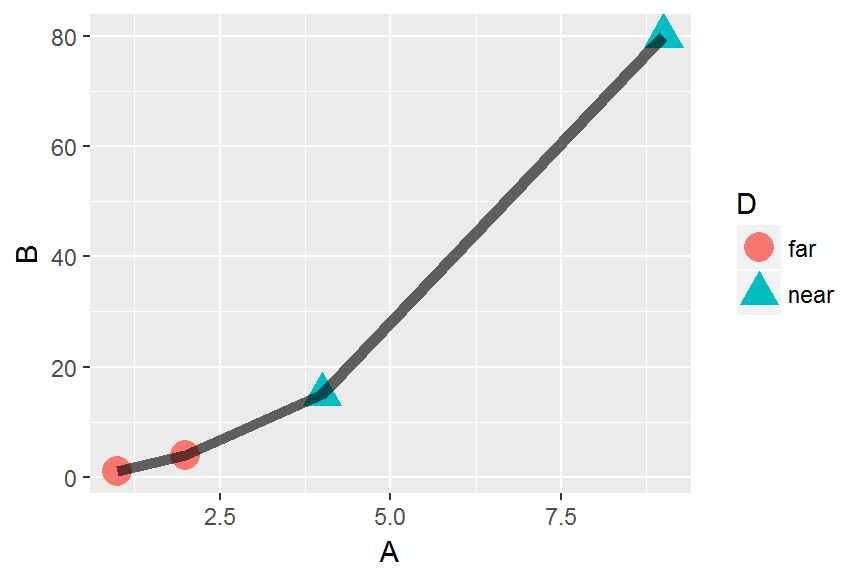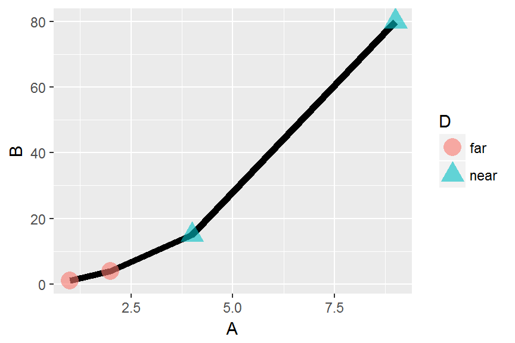

Facets
Faceting, according to Wickham, is “a more general case of the techniques known as conditioning, trellising, and latticing, and produces small multiples showing different subsets of the data” (page 6). This conditioning is done by way of the facet_grid() argument using formula, ~, syntax:
ggplot(aes(x = A,y=B),data = df) + geom_line(size=2)+ geom_point(size = 4) + facet_grid(.~D)
ggplot(aes(x = A,y=B),data = df) + geom_line(size=2)+ geom_point(size = 4) + facet_grid(D~.)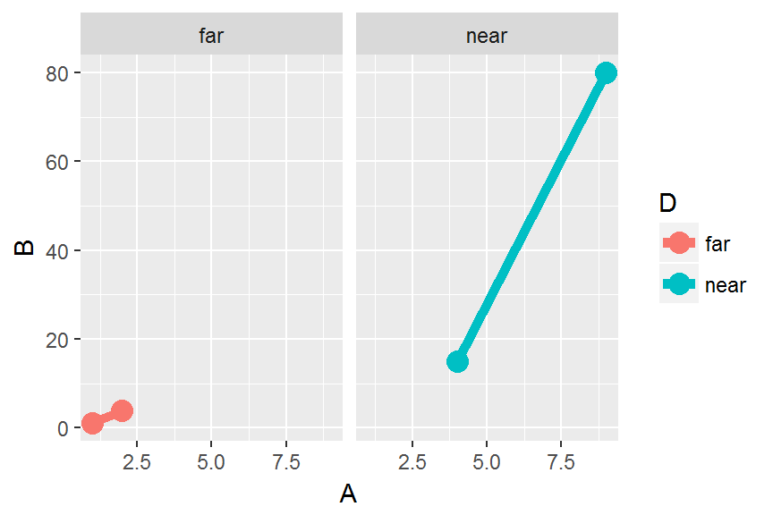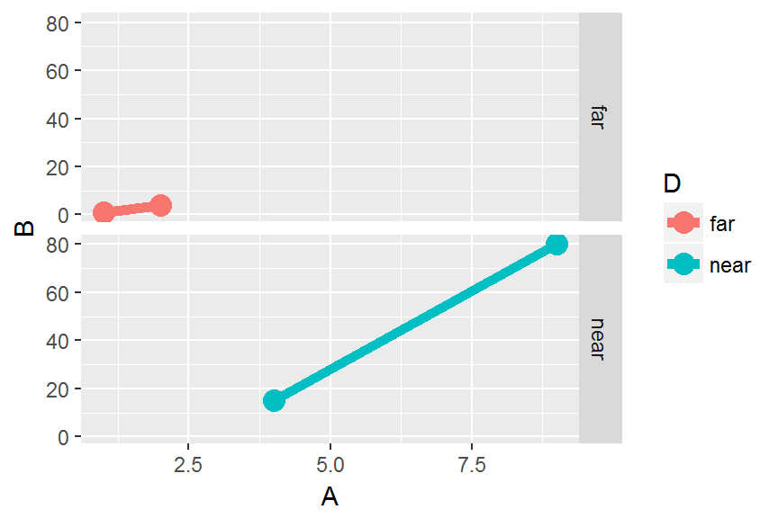
The easiest way to change the labels is to change the levels of the D factor:
levels(df$D)## [1] "far" "near"levels(df$D) <- c('Away','Home')
ggplot(aes(x = A,y=B, color=D),data = df) + geom_line(size=2)+ geom_point(size = 4) + facet_grid(.~D)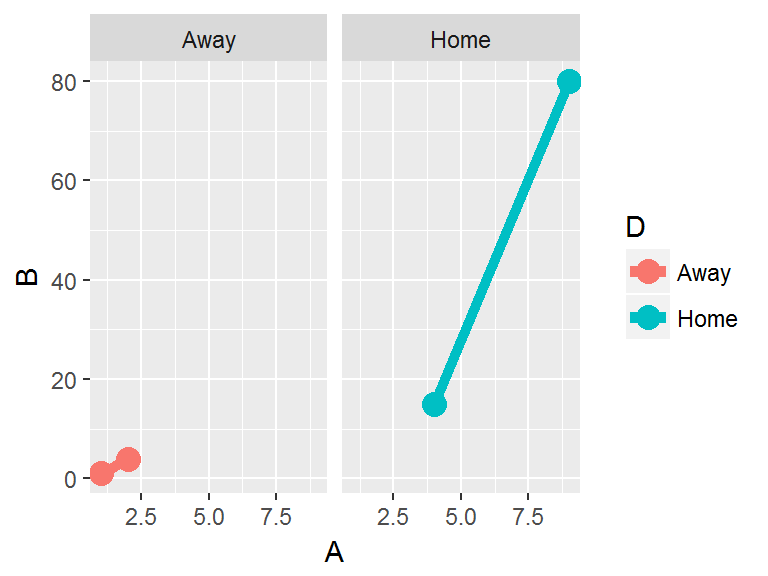
Changing the labels without changing the underlying data requires use of a labeller function, with is not exactly intuitive.
Bells and whistles
Titles and axis labels are easily modified by way of the ggtitle(), xlab(), and ylab() commands. Legend titles and labels are a little less intuitive, and require thought as to the scale that is being shown, and the variable type that is being mapped. Changing these is by way of the scale_*_*() function, where the first * is the scale type and the second * is the type of the variable being mapped.
For example, suppose we want to change the default legend name and labels of the following graph: 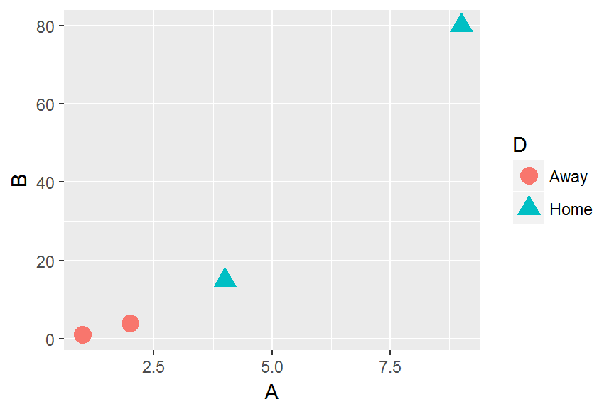
There are two scales involved in this visualization: shape and color, and they are being used to map a discrete variable. Hence to modify the legend we should use scale_shape_discrete() and scale_color_discrete(). Note that if we only modify one at a time, two legends will appear reflecting the different modifications; this is not desirable. The names and labels must be identical for the two legends to merge:
ggplot(data = df) + geom_point(aes(x = A,y=B, shape = D,color=D), size = 4) +
scale_shape_discrete(name='Variable D')
ggplot(data = df) + geom_point(aes(x = A,y=B, shape = D,color=D), size = 4) +
scale_color_discrete(labels=c('TweedleDee','TweedleDum'))
ggplot(data = df) + geom_point(aes(x = A,y=B, shape = D,color=D), size = 4) +
scale_color_discrete(name='Variable D',labels=c('TweedleDee','TweedleDum')) +
scale_shape_discrete(name='Variable D',labels=c('TweedleDee','TweedleDum')) +
xlab('Variable A') + ylab('Variable B') + ggtitle("Here's a sweet title")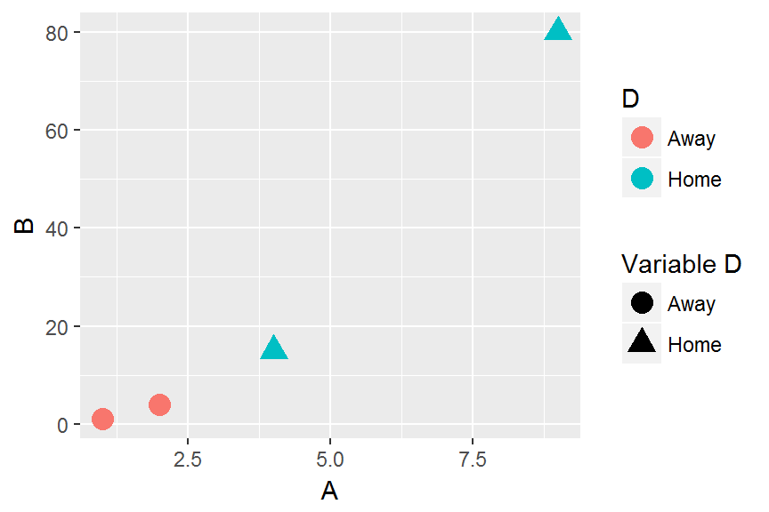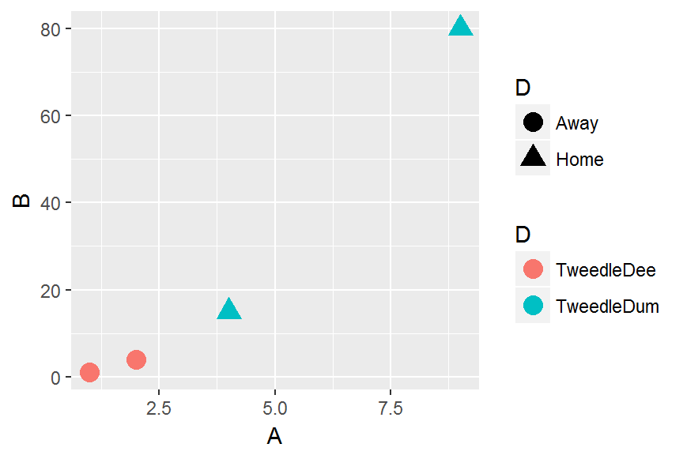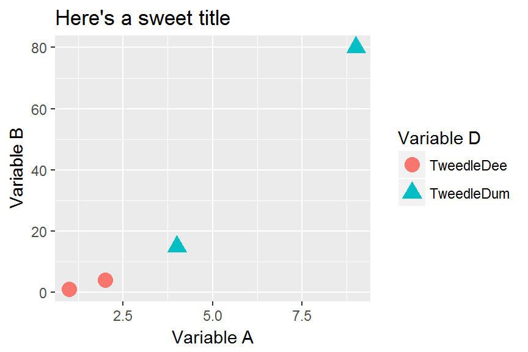
References
Wickham, Hadley. A layered grammar of graphics. Journal of Computational and Graphical Statistics 19(1):3-28. 2010.
Data Carpentry,
2017. License. Contributing.
Questions? Feedback?
Please file
an issue on GitHub.
On
Twitter: @datacarpentry